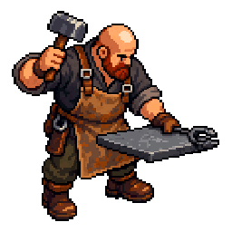
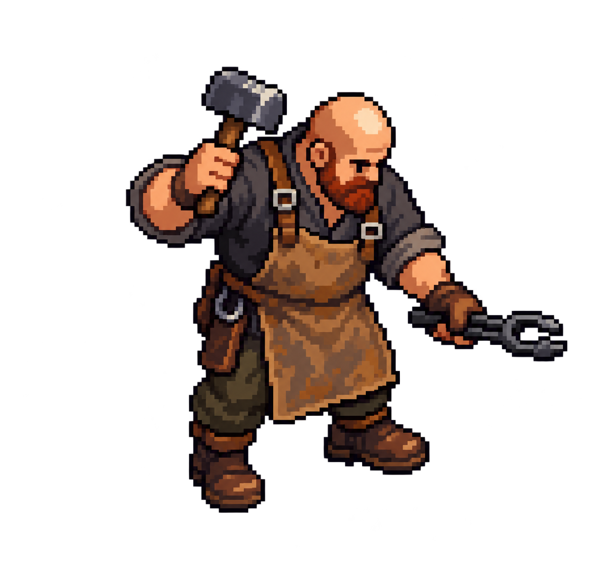
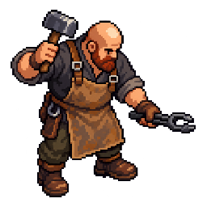

Референс железной пластины

Референс появится после завершения генерации.Хаб · анимационные пробы
Сравни пять вариантов удара. Перематывай кадр за кадром, чтобы проверить: молот касается металла раньше, чем появляются первые искры.
Исходники

Референс появится после завершения генерации.
Исходник появится после подготовки файлов.
Исходный кадр появится после подготовки файлов.Сравнение поведения